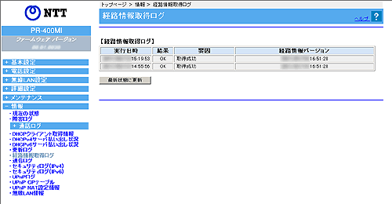

| ご利用のサービスにより画面が表示されない場合があります。 本商品と経路情報提供サーバとの通信ログが表示されます。 |
|
|
|
| ※「Web設定」画面に表示されているボタンについての説明は こちら | |
|  |
| ［経路情報取得ログ］ | ||
| 本商品と経路情報提供サーバとの通信ログが表示されます。 ログは最新のものから順に最大20件表示されます。 情報更新日時には、経路情報が経路情報提供システムに登録された年月日が表示されます。 時刻情報が取得できない場合には、機器起動時点を0時とする相対時刻が実行日時に表示されます。 時刻情報が取得できた場合には、絶対時刻が実行日時に表示されます。 |
||
| 経路情報取得の実行日時を表示します。 | |
| 実行結果を「OK」か「NG」で表示します。 | |
| 経路情報取得結果に対する要因を「取得成功」「接続エラー」「HTTPエラー（code）」「フォーマットエラー」を用いて、表示します。 | |
| 経路情報バージョンを表示します。 | |